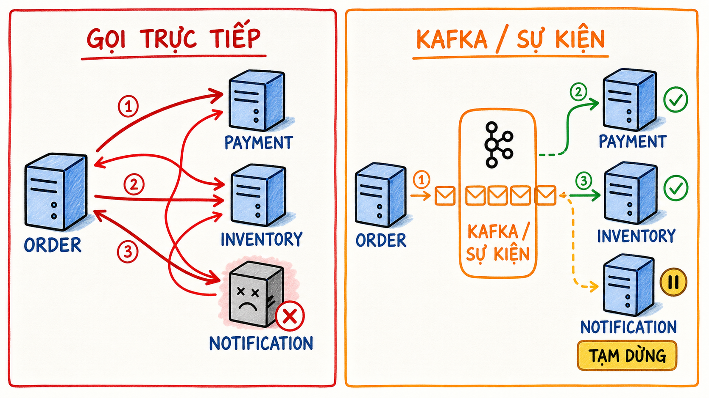

Quan sát
Xem sơ đồ và animation một lần. Tập trung vào hướng mũi tên và trách nhiệm của từng thành phần.
Module 1–2 xây mental model nền tảng: Kafka giải quyết vấn đề gì, một event gồm những gì, và cách topic → partition → offset tổ chức dữ liệu. Học bằng quan sát và thử nghiệm, không học thuộc định nghĩa.
Xem sơ đồ và animation một lần. Tập trung vào hướng mũi tên và trách nhiệm của từng thành phần.
Tự nói lại bằng lời của bạn. Không cần đúng thuật ngữ ngay; cần đúng quan hệ nhân quả.
Dùng mô phỏng và bài lab. Một khái niệm chỉ được xem là biết khi bạn dự đoán được kết quả.
Kafka tạo ra một dòng sự kiện bền vững ở giữa các hệ thống. Producer công bố sự thật đã xảy ra; các consumer tự quyết định khi nào và cách xử lý.

| Câu hỏi | HTTP trực tiếp | Kafka / event-driven |
|---|---|---|
| Producer có cần biết nơi nhận? | Có, thường cần URL và contract của service đích. | Không cần biết từng consumer; cần biết topic và event contract. |
| Service nhận đang dừng? | Request có thể timeout/fail; bên gọi phải xử lý. | Event có thể còn trong topic để consumer đọc khi hoạt động lại, tùy retention và offset. |
| Cần kết quả ngay? | Phù hợp nếu cần phản hồi đồng bộ ngay lập tức. | Không phù hợp nếu caller bắt buộc phải có kết quả cuối ngay trong cùng request. |
| Thêm một bên nhận mới? | Thường phải thêm lời gọi hoặc thay đổi orchestration. | Consumer mới có thể subscribe mà không bắt producer gọi trực tiếp nó. |
Nhấn nút và đọc thành tiếng ba bước: publish → store → consume.
Order Service gửi event vào topic. Nó không gọi trực tiếp ba consumer.
Broker append event vào một partition. Việc consumer đọc không tự động xóa event.
Mỗi ứng dụng quan tâm đọc và duy trì tiến độ riêng thông qua consumer group/offset.
OrderCreated tốt hơn CreateOrder khi mục đích là thông báo: order đã được tạo. Event nên mô tả quá khứ, không ra lệnh cho một consumer cụ thể.
order-742 — giúp định tuyến partition và giữ thứ tự cho cùng một thực thể.{ orderId, customerId, total }.{
"eventType": "OrderCreated",
"eventId": "4d86...",
"occurredAt": "2026-08-23T15:10:00Z",
"orderId": "order-742",
"total": 1250000
}Event là điều đã xảy ra. Nếu dữ liệu hiện tại thay đổi, event cũ vẫn là lịch sử hợp lệ.
Producer không nên biết chính xác consumer nào sẽ nhận và thực hiện method nào.
Ứng dụng ghi event. Producer chọn topic và có thể cung cấp key.
Kafka server nhận, lưu và phục vụ dữ liệu. Một cluster thường có nhiều broker.
Luồng dữ liệu có tên. Topic có retention và được chia thành nhiều partition.
Append-only log có thứ tự. Đây là đơn vị song song hóa và replication.
Ứng dụng đọc event. Consumer có thể đọc lại vì event không biến mất ngay sau khi đọc.
Vị trí tuần tự của record trong một partition; không phải ID toàn cục của event.
Nhập nhiều event. Hãy thử cùng key order-101 ba lần, rồi đổi thành order-202. Quan sát partition và offset.
Spring Boot tự cấu hình hạ tầng Kafka qua spring.kafka.*. Bạn vẫn phải hiểu topic, key, serialization và failure semantics để dùng đúng.
kafkaTemplate.send(
"order-events",
event.orderId(), // key
event // value
);@KafkaListener(
topics = "order-events",
groupId = "inventory"
)
void on(OrderCreated event) {
// xử lý nghiệp vụ
}Không nhìn phía trên, giải thích bằng lời của bạn: “OrderCreated đi từ Spring Boot producer tới ba consumer như thế nào?”
Mục tiêu là chứng minh mental model trước khi framework che bớt chi tiết.
spring.kafka.*, KafkaTemplate và @KafkaListener.